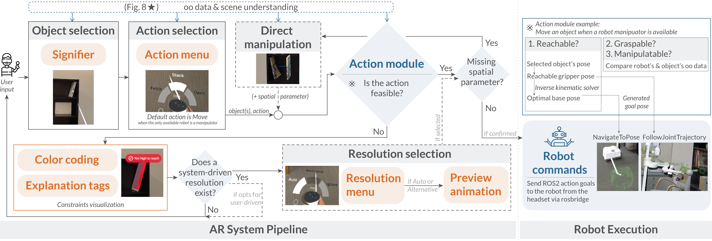

Human interaction is essential for issuing personalized instructions and assisting robots when failure is likely. However, robots remain largely black boxes, offering users little insight into their evolving capabilities and limitations. To address this gap, we present explainable object-oriented HRI (X-OOHRI), an augmented reality (AR) interface that conveys robot action possibilities and constraints through visual signifiers, radial menus, color coding, and explanation tags. Our system encodes object properties and robot limits into object-oriented structures using a vision-language model, allowing explanation generation on the fly and direct manipulation of virtual twins spatially aligned within a simulated environment. We integrate the end-to-end pipeline with a physical robot and showcase diverse use cases ranging from low-level pick-and-place to high-level instructions. Finally, we evaluate X-OOHRI through a user study and find that participants effectively issue object-oriented commands, develop accurate mental models of robot limitations, and engage in mixed-initiative resolution.

The AR pipeline begins with object and action selection via raycasting and the radial menu. The action module validates feasibility using user input, object-oriented data, environment information, and optional spatial parameters. If limitations arise, the system updates color coding, explanation tags, and optional resolution strategies for users to preview and confirm, before publishing ROS2 messages with generated poses for robot execution.
The user wants to place the book on a different shelf. With X-OOHRI, she moves the virtual twin to specify its placement while understanding the limitations.
The user tries to store foam blocks in an occluded basket. With X-OOHRI, she understands the limitation and selects the Auto resolution, which pulls the baskets out, stores the blocks, and pushes them back in.
The user finds the room too dark and wants to adjust the blinds. With X-OOHRI, she selects the Brighten action, sees the tilt wand is out of reach, and instead chooses Draw, opening the blinds through direct manipulation by raising the controller to specify the height.
@proceeding